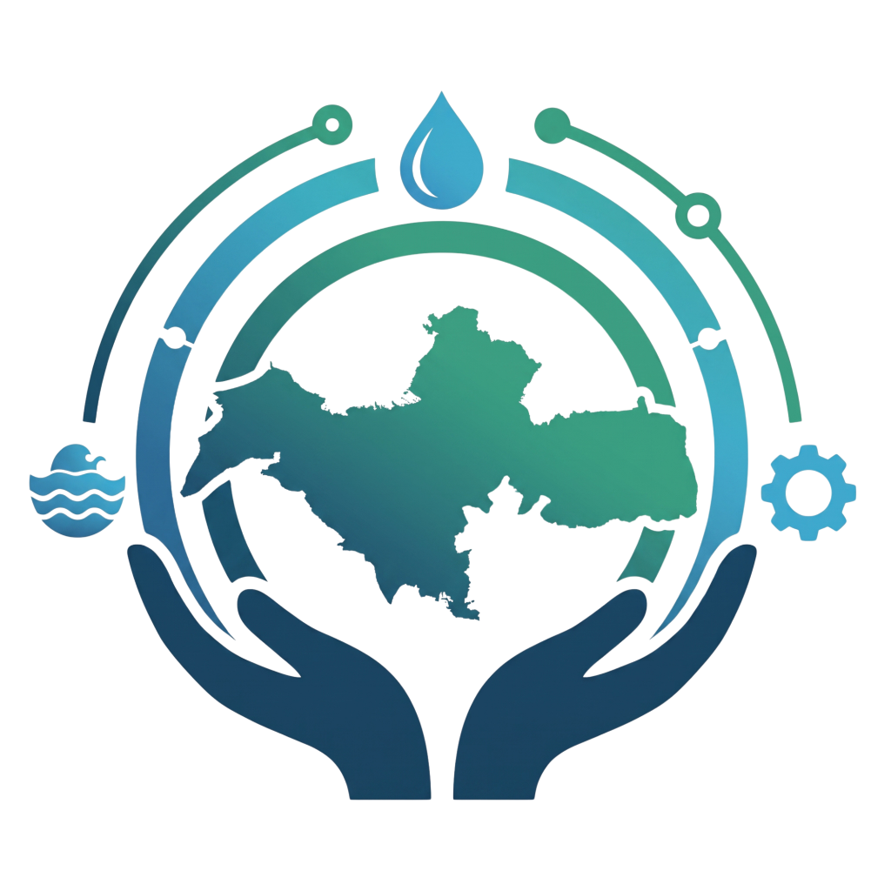

Sistem Pendukung Keputusan Mitigasi Bencana Hidrometeorologi
Klik salah satu desa untuk langsung menyorot dan melihat detail pada peta.
| Desa / Kelurahan | Kecamatan | Kab/Kota | Suhu (°C) | Kelembapan (%) | Angin (km/j) | Kondisi Cuaca | Kelas Hujan |
|---|---|---|---|---|---|---|---|
| Memuat data desa… | |||||||